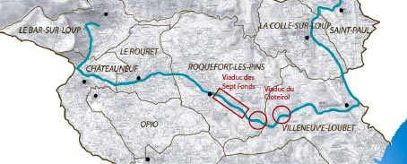
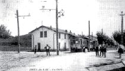
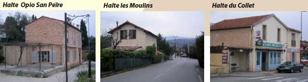
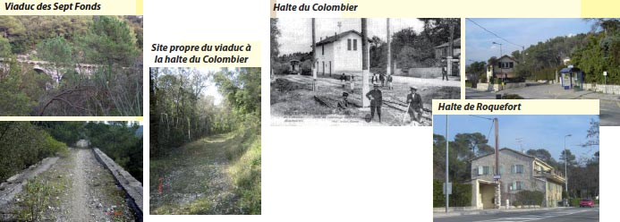
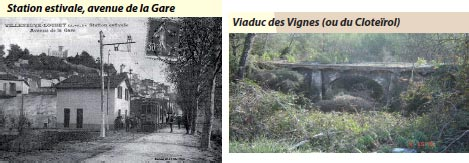
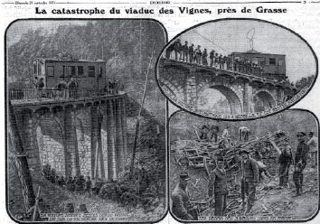
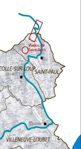

Le patrimoine contemporain - Les déplacements - Le tramway des Alpes-Maritimes
Les tramways des Alpes-Maritimes ...
Parallèlement aux trois grandes lignes, Nice-Digne, Nice-Meyrargues et Toulon St-Raphaël, un réseau de 7 lignes de tramways électriques furent annexés au réseau. Parmi ces 7 lignes, concernant le territoire de la CASA, les lignes Cagnes- Grasse et Villeneuve-jonction (Cagnes)-Vence furent inaugurées le 30 Décembre 1911 ; la jonction Pré-du-Lac-Le- Bar fut établie le 1er Octobre 1912.
La ville de Grasse, déçue d’être isolée des transports rapides côtiers, tenait à développer ses transports modernes, en particulier les tramways qui étaient déjà d’actualité sur le littoral. L’exploitation débuta sur une section raccourcie (Pré-du-Lac-Grasse-cours). L’inauguration du dernier tronçon (Pré-du-Lac-Cagnes) eut lieu le 30 décembre 1911. Cette ligne fut connue par l’accident le plus grave répertorié sur une voie ferrée dans le département. Le 17 Septembre 1913, un tramway lourdement chargé, partant de Grasse en direction de Cagnes, prit de la vitesse dès le viaduc des Sept-Fonts pour atteindre 65 km/h à l’entrée du viaduc du Cloteïrol, la remorque de queue dérailla sur le viaduc, entraînant dans le ravin deux autres voitures. Le bilan fut lourd : 19 morts et 39 blessés. Le déclin du tramway était annoncé et la ligne ferma totalement le 15 Mai 1929.

Ligne Cagnes-Grasse
Cagnes station
Bifurcation des lignes de Grasse et de Vence
Villeneuve jonction arrêt fixe
Souterrain du col de Graille 101 m (tram + route)
Col-de-Graille arrêt facultatif puis fixe
Villeneuve-Loubet halte
Pont sur le loup (5 arches, 85 m)
La Vanade arrêt facultatif
Viaduc du Cloteirol 8 arches, total 52 m)
Les Sept-Fonts arrêt facultatif
Viaduc des Sept-Fonts (12 arches, total 139 m)
Le Colombier sanctuaire halte
Roquefort halte
Rigamel-Granet arrêt facultatif
Les Moulins arrêt fixe (ex Collet)
Le Rouret-Le Collet halte
Saint-Pons arrêt fixe
Opio-San-Peïre halte
Les Gibous arrêt facultatif
La Mousquette arrêt facultatif
Châteauneuf Pré-du-Lac station
Bifurcation des lignes du Bar et de Grasse
Ligne Châteauneuf-Bar-sur-Loup
Châteauneuf Pré-du-Lac station
Les Martelles arrêt facultatif
Le Bar-ville arrêt fixe
Le Bar bifurcation station
Gare de Pré-du-Lac
L’antenne Pré-du-Lac-Le-Bar de 3 km fut construite de 1909 à 1911 et ouverte à l’exploitation le 1er Septembre
1912. Elle ferma le 15 Mai 1929
CHATEAUNEUF
La station de Pré-du-Lac de la ligne du tramway fut ouverte en 1910. A cet endroit la ligne prenait deux directions soit celle du Bar-sur-Loup soit celle de Grasse. Aujourd’hui le tracé du tramway depuis le Rouret a totalement été intégré à la voie, la station a été détruite, en revanche il demeure l’ancienne gare de marchandise utilisée par le Conseil Général.
La ligne Nice-Meyrargues réalisée par la Compagnie des chemins de fer du Sud de la France venant de Grasse empruntait le tunnel de Pré-du-Lac d’une distance de 515 m sous l’actuel rond point et débouchait vers le chemin des Cerisiers sur un site propre en direction du Bar-sur-Loup.

LE ROURET
Le tracé du tramway traversait la commune du Rouret et 3 gares furent construites (la 3e gare, sur le territoire du Rouret, était la halte d’Opio). La particularité était que la commune a connu 2 stations mais dont la seconde ne servit jamais.
La première station, la station des Moulins, ouverte en 1911, se trouve à la sortie du site propre menant du quartier Château Mougins à la RD 2085. C’est aujourd’hui une maison d’habitation.
La seconde gare fut construite à la demande de la population du Collet qui s’estimait lésée mais, le temps de l’ériger (1926), la ligne était abandonnée et la station ne fut jamais utilisée en tant que telle.
Concernant le tracé, il est également à noter que du quartier Saint-Pons, aujourd’hui le centre de la commune, jusqu’à la station d’Opio, le tramway empruntait une voie en site propre au profit de la route nationale qui était plus basse et plus sinueuse. Après l’abandon du tramway, la voie fut conservée et depuis la RD 2085 passe en cet endroit par l’ancienne voie du tramway.
La halte d’Opio est très intéressante car elle présente encore le quai tel qu’il a été construit originellement.

ROQUEFORT-LES-PINS
La commune porte de nombreuses traces du passage de la ligne du tramway. Il suivait le plus souvent la route départementale mais deux sites propres sont actuellement visibles et à préserver :
- Le viaduc des Sept Fonds, le long de la RD 2085, d’une longueur de 139 m et composé de 12 arches, il est encore bien conservé et l’on peut s’y promener à pied.
- Le site propre reliant la sortie du viaduc au Colombier. Ce tracé, d’environ 1.5 km, ne suivait pas la sinuosité de la route départementale mais présentait un tracé relativement rectiligne. A la sortie du viaduc, la roche a été creusée sur à peu près 100 m et débouchait sur une clairière. Sur environ 800 m, le tracé en remblai est droit et présente une légère déclivité. Aujourd’hui, ce chemin est une piste, la piste du tramway, très agréable et bien entretenue. Cette piste se termine sur un quartier résidentiel « le Clos » et le chemin porte depuis le nom de « chemin du tramway ». L’ancien tracé rejoignait donc la première station de Roquefort. En limite de commune et avant l’arrivée au Rouret, le tracé bifurquait de la RD 2085 au niveau de Château Mougins pour passer par les Martels et rejoindre la halte du Rouret sur la RD 2085, 15 km plus loin.
Le tramway s’arrêtait en 2 points :
- la halte du Colombier, qui a permis notamment le développement du sanctuaire du Colombier et en particulier son pèlerinage. L’ancienne station est désormais une maison d’habitation.
- la halte de Roquefort, dont le bâtiment a été détruit mais l’abribus demeure.

VILLENEUVE-LOUBET
Le Viaduc des Vignes (ou viaduc de Cloteirol) faisait partie des ouvrages réalisés pour la ligne de tramway Cagnes-Grasse (en exploitation de décembre 1911 à 1930). D’une longueur de 52 m et composé de 8 arches, il fut l’objet d’un accident spectaculaire le 17 septembre 1913. Par sa valeur de témoignage historique, il mérite en urgence une restauration.

Accident du 17 septembre 1913 Par une journée pluvieuse, un tramway lourdement chargé partit de Grasse en direction de Cagnes. Malgré les tentatives de freinage d’urgence, le convoi prit de la vitesse dès le viaduc des Sept-Fonds pour atteindre 65 km/h à l’entrée du viaduc du Cloteirol. La remorque de queue dérailla, entraînant dans le ravin deux autres voitures. Seule la motrice de tête resta sur le viaduc. Le bilan fut lourd : 19 morts et 39 blessés.

Les travaux de la ligne Cagnes-Vence (10 km) débutèrent en 1907, mais la construction du grand viaduc du Malvan et divers problèmes retardèrent sa mise en exploitation, qui eut finalement lieu le 30 Décembre 1911. Cette ligne fut elle aussi émaillée d’incidents, et de coûteux aménagements durent être réalisés par la suite. Elle résista un peu à la vague de fermetures opérées entre 1929 et 1931 mais la ligne fut tout de même fermée le 31 Décembre 1932.

LIGNE Cagnes-Vence
Cagnes station
Villeneuve jonction arrêt fixe
Bifurcation des lignes de Grasse et de Vence
Grange-Ramade arrêt fixe
Les Caillades arrêt facultatif
Arnoux-Montfort arrêt facultatif
La Colle-sur-Loup station
Viaduc du Puits de Tassier (17 arches, total 113 m)
Les Rouguets arrêt fixe
Viaduc de la Souquée (15 arches, total 81 m)
Les Rouberts arrêt facultatif
Les Cotes arrêt facultatif
Viaduc de Saint-Roch (12 arches, total 75 m)
Les Fumerates arrêt facultatif
Pont du Triou (3 arches, total 18 m)
Saint-Paul station
Viaduc de Sainte-Claire (7 arches, total 42 m)
Viaduc des Gardettes (6 arches, total 39 m)
Viaduc du Malvan (6 arches, total 155 m)
Le Malvan arrêt fixe
LA COLLE-SUR-LOUP et SAINT-PAUL
Le tramway de la ligne Cagnes – Vence traversait les communes de Villeneuve-Loubet, La Colle-sur-Loup et Saint-Paul. Sur cette ligne, le tracé nécessita la construction de 6 viaducs. Aujourd’hui, les 2 viaducs de La Colle-sur-Loup ont été intégrés à la RD 6.
- Le viaduc du Malvan, l’ouvrage le plus important des lignes Cagnes – Grasse et Cagnes – Vence (6 arches et 155 m), a été détruit lors de la Seconde Guerre Mondiale et la dernière pile dans les années soixante. Aujourd’hui, il ne reste que la dernière culée sur le côté gauche de la RD 2.
Le viaduc de Sainte-Claire a été intégré également à la route et l’on en distingue encore les arches en se rendant au parking. Le reste du tracé suivait les routes départementales actuelles et fut intégré à la voirie (RD 6 de Cagnes-sur-Mer à La Collesur- Loup et RD 27 et RD 2 de La Colle-sur-Loup à Vence)
- Le viaduc de Saint-Roch est le dernier élément en état. Composé de 12 arches et long de 75 m, il se situe en contre-bas du virage qui mène au Mas d’Artigny.